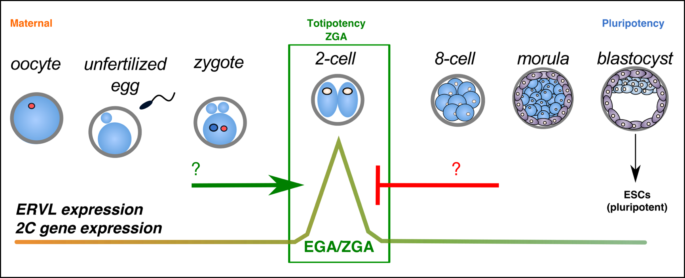
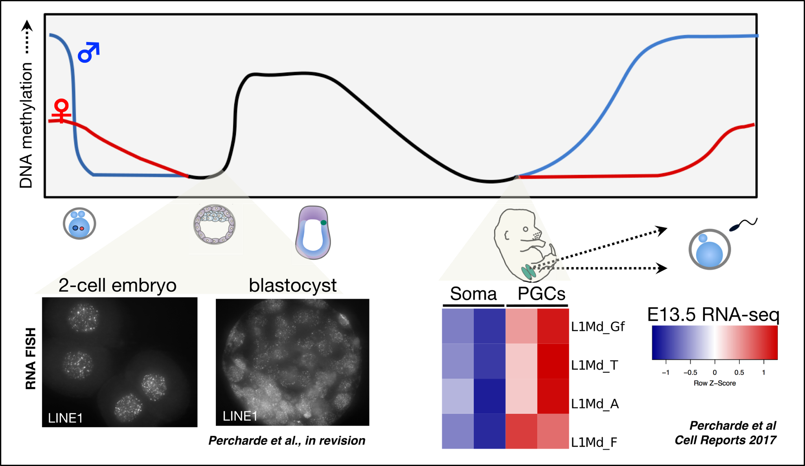

Research
UNDERSTANDING THE MOLECULAR REGULATORS OF EARLY DEVELOPMENT
In early development, a single fertilized zygote proceeds through a series of cleavage steps to develop into a multicellular blastocyst. The cells of the blastocyst are capable of generating all adult cell types, a phenomenon known as pluripotency. The inner cell mass (ICM) of the blastocyst can moreover be cultured in vitro as pluripotent embryonic stem (ES) cells, which have become invaluable tools for understanding development and for regenerative medicine.
How the early embryo develops into a pluripotent blastocyst involves a remarkable reprogramming of cellular transcriptional networks, epigenetic modifications, and signaling pathways. Using mouse and human embryonic ES cells and mouse models, we aim to understand more about how these layers of regulation function in development, and to characterize novel axes of gene regulation important in development. We are particularly interested in the function of transposable elements (TEs). TE sequences make up nearly 50% of our genomes yet have been greatly understudied. We aim to understand more about the role and regulation of TEs during development and disease:
1. ERVL AND TOTIPOTENCY
During early mammalian embryogenesis, a fertilized zygote develops to a multicellular embryo characterized by slowly decreasing developmental potency. While cells of the blastocyst ICM are pluripotent and can generate all three germ layers, they lack the ability to generate extraembryonic lineages. In contrast, cells of early cleavage stage embryos (2-cell embryos in mouse) are totipotent, possessing the highest degree of developmental potency. However much less is known about this stage of development, nor the regulation of totipotency in vivo and in vitro.
Recently, it has been discovered that the LTR transposon, ERVL (MERVL, MuERV-L) is highly and transiently activated in totipotent cells and embryos, along with several hundred ERVL-driven 2-cell specific transcripts. Activation of this program by the transcription factor, Dux is essential for embryonic development.
We aim to understand more about the protein complexes and signaling pathways that regulate exit and entry from totipotency in vitro and in vivo.
2. NOVEL ROLES FOR LINE1 AND OTHER TES IN DEVELOPMENT
The retrotransposon Long INterspersed Element-1 (LINE1) makes up the largest proportion of transposable element (TE)-derived sequences, and is the only class of autonomous TE still active in human. LINE1 retrotransposition activity (a copy-and-paste mechanism) may generate genomic mutations, and uncontrolled LINE1 activity is generally thought to be deleterious for cells.
However, LINE1 RNA is highly abundant during mouse early development (left), suggesting that some cells may tolerate or even require high levels of LINE1 expression.
We have investigated a potential requirement for LINE1 RNA-containing complexes in mouse ES cells and embryos. We find that LINE1 associates with several epigenetic factors in ES cells and is required for these complexes to maintain pluripotency-specific gene expression programs (Percharde et al., in revision).
These results suggest that retrotransposons such as LINE1 may be an integral part of transcriptional networks in cells. Going forward, we are interested in the question as to whether other transposons may have undiscovered functions in development, or in diseases such as cancer.